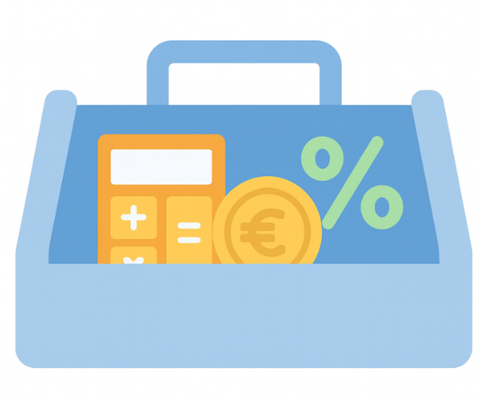

Welkom bij Mijntoolbox.nl!
Gratis online & downloadbare tools!
Op deze website vind je een groeiende verzameling praktische tools die je direct in je browser kunt gebruiken. Alles draait lokaal, zodat je gegevens nooit online worden opgeslagen en je veilig en snel kunt werken. Het uitgangspunt is simpel: korte, duidelijke hulpmiddelen die direct resultaat geven, zonder gedoe. Naast de online versies zijn veel tools ook gratis te downloaden. Elke download wordt geleverd met een duidelijke uitleg, zodat je precies weet hoe je het programma of de functie kunt gebruiken. Zo heb je altijd de keuze om een tool direct online te proberen, of om een versie op je eigen computer te bewaren. MijnToolBox.nl blijft voortdurend uitbreiden met nieuwe functies en verbeteringen. Of je nu iets wilt omzetten, genereren of gewoon een handige digitale helper zoekt hier vind je alles overzichtelijk bij elkaar.
